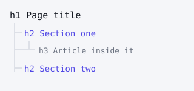

Every block on this page is a real HTML5 element. A screen reader can list the landmarks
and jump straight to any of them — something a page built from
<div> can't offer.
The landmarks in use
Generic element on the left, the semantic replacement on the right
Instead of
Use
Implicit role
div class="header"
header
banner
div class="nav"
nav
navigation
div id="content"
main
main
div class="sidebar"
aside
complementary
div class="post"
article
article
div class="footer"
footer
contentinfo
Because these roles are implicit, writing <header role="banner"> is
redundant. Only add a role when no element carries it already.
Heading order
Headings form the outline a screen reader uses to skim. One
h1 per page, then descend one level at a time — never skip from
h2 to h4 just because the smaller size looks nicer.
An article inside a section
article is for content that would still make sense on its own — a blog
post, a product card, a comment.
A subheading inside the article
Level 4 is correct here because it sits under a level 3.

figure with figcaption ties an image to its caption in the
accessibility tree.
ARIA where HTML falls short
aria-label — names an element that has no visible text. Both
nav elements on this page carry one, so they don't read as two identical
"navigation" landmarks.
aria-labelledby — points at existing visible text instead of
duplicating it. Each section above is labelled by its own heading.
aria-current="page" — marks which nav link is the current page.
aria-hidden="true" — hides decoration from screen readers. Used on
the arrow below.
alt="" — an empty alt on a purely decorative image is correct; a
missing alt is not.
Rule of thumb: the best ARIA is no ARIA. Reach for a real element first, and only add an
attribute when HTML genuinely has no equivalent.
How to check this page yourself ↓
Press Tab from the address bar — the skip link appears first, and every
focused element has a visible outline.
Open DevTools → Elements → Accessibility pane to read the computed tree.
Run Lighthouse → Accessibility, or install the axe DevTools extension and scan.
Disable CSS entirely — the page should still read in a sensible order.